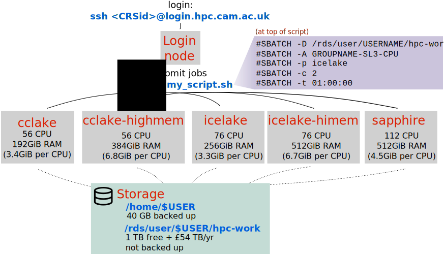

Cambridge University HPC Resources
These materials have accompanying slides: Cambridge HPC slides
The supercomputers at Cambridge University are known as Cambridge Service for Data-Driven Discovery (CSD3). Here is a schematic of the university HPC:

/rds storage shown here is the equivalent of what we referred as “scratch” during the workshop.Registering for an Account
Anyone with a Raven account can have access to the HPC. There are different levels of service, but the basic one can be used for free. To get an account fill in the Research Computing Cluster Account Application Form.
After your account is created, you will receive an email. Please read it carefully, as it contains instructions to set up two-factor authentication, which is necessary to use the Cambridge HPC.
Accessing the HPC
Once your account is created, you can login to the HPC with ssh CRSid@login.hpc.cam.ac.uk using your Raven password. You will also require a TOTP code (time-based one-time password), which should be setup on your phone when you create the account (see above).
Filesystem
There are two main storage locations of interest available on the CSD3 HPC:
/home/USERNAMEis the user’s home directory. It has a 40GB quota and is backed up. This should be used for example for local software and perhaps some very generic scripts./rds/user/USERNAME/hpc-workis the user’s working directory. It has a 1TB quota and is NOT backed up. More space can be purchased).
When you login to the HPC you will notice there is a link (aka shortcut) to the rds directory. Try ls -l to see it.
You can see how much space you are using on your storage partitions using the command quota.
File Transfer
Using scp and rsync work very similarly to the standard ssh command, they will request your password and TOTP code to transfer the files.
For Filezilla, you will need some extra configuration, which is detailed here.
It can be quite tedious to have to type a TOTP every time you run scp, rsync or ssh. There is a way to reduce this somewhat, see this page of the docs.
Software
There are several software packages pre-installed on the HPC and available through the module command, as covered in Using pre-installed software. However, the latest versions of software are not always available. You can request the HPC helpdesk to install newer versions (or an entirely new software), although they may sometimes not do so, if it’s a fast-changing software.
Alternatively, we recommend that you manage local software using Mamba, as explained in Software Management. Note that some software packages can be quite large, but the home directory on CSD3 only has 50GB. This risks running out of space in the home as you install more and more software. There are a few things we recommend to avoid this situation:
- If you don’t anticipate needing to use an environment again soon (e.g. you finished a project), delete the environment using
mamba env remove -n ENV_NAME. - Occasionally remove unused packages and clear the cache using
mamba clean --all. You can first run this command with the additional option--dry-runto see what would be removed, before actually removing it. - Install the large environment in a non-default directory using the option
-p. For example, runningmamba create -p ~/rds/hpc-work/condaenvs/mapping bowtie2will install the environment in the specified directory. The disadvantage is that you then have to activate the environment with the path:mamba activate ~/rds/hpc-work/condaenvs/mapping.
Finally, you can use containers with Singularity, which is pre-installed on the HPC (no need to load anything). Do not install your own Singularity (e.g. via Mamba), as it will not be correctly configured for the HPC filesystem.
Running Jobs
There are two types of nodes that you can access on CSD3:
- CPU-based cluster, which is suitable for most people (e.g. general bioinformatics use)
- GPU-based cluster, which is suitable for people using tools that parallelise on GPUs (e.g. deep learning applications and image processing)
We will focus on the CPU-based cluster, which is the most commonly used.
There are three types of partitions on the CPU nodes:
Partition Name (-p) |
Max CPUs (-c) |
Max Total RAM (--mem=) |
Max RAM Per CPU (--mem-per-cpu=) |
|---|---|---|---|
icelake |
76 | 256G | 3380M |
icelake-himem |
76 | 512G | 6760M |
cclake |
56 | 192G | 3420M |
cclake-himem |
56 | 384G | 6840M |
sapphire |
112 | 512G | 4580M |
You can choose these depending on your needs (whether you require more or less memory per CPU).
Submission Script
Here is a simple skeleton for your submission script:
#!/bin/bash
#SBATCH -A GROUPNAME-SL3-CPU # account name (check with `mybalance`)
#SBATCH -D /rds/xyz123/hpc-work/simulations # your working directory
#SBATCH -o job_logs/simulation.log # standard output and standard error will be saved in this file
#SBATCH -p icelake # or `icelake-himem` or `cclake` or `cclake-himem`
#SBATCH -c 2 # number of CPUs
#SBATCH -t 01:00:00 # maximum 12:00:00 for SL3 or 36:00:00 for SL2Default Resource Options
If you don’t specify some of the options listed above, this is the default you will get:
- 10 minutes of running time (
-t 00:10:00) - cclake partition (
-p cclake) - 1 CPU (
-c 1) - 3420 MiB RAM (
--mem=3420Mor--mem-per-cpu=3420M)
Tip - test your jobs faster:
#SBATCH --qos=intr option can be used when testing scripts. This will allocate a maximum of 1h to your job in the highest priority queue. Only one of these jobs is allowed to run at a time and after the 1h the job will be killed, so it should only be used for testing scripts.
Ballance & Billing
The billing on the University HPC is done by CPU-hour. Here’s some examples:
- You requested 3 CPUs (
-c 3) and 10 hours (-t 10:00:00). Your job only took 2 hours to finish. You are charged 3*2 = 6 hours of compute time. - You requested 1 CPU (
-c 1) and 10000 MiB of total RAM (--mem=10G) on icelake-himem (-p icelake-himem), and the job took 1 hour to run. Because this partition provides 6760 MiB (or 6.7 GiB) per CPU, you will actually be charged for 2 CPUs, so 2*1 = 2 hours of compute time.
If you’re using a SL3 account (free), your allowance is capped. Each PI receives 200,000 CPU hours per quarter. You can check your allowance with the command mybalance.
You can purchase CPU hours on the SL2 service level. This service level gives you higher priority in the queue and jobs can run up to 36h (on the free SL3 the maximum running time is 12h).
Long Jobs
As a standard, you are limited to a maximum of 36h for running jobs using an SL2 account (12h with SL3). Long jobs (up to 7 days) can be run on special queues, for which you need to request access. See instructions on the documentation page.
Additional Resources
- UIS documentation:
- Price list for HPC storage
- Slack Workspace - you can use this workspace to get help from other uses of the University of Cambridge HPC.
Other University Departments
Here are some links to HPC information in other University Departments:
- CRUK
- SLCU
- Plant Sciences (Raven login required)